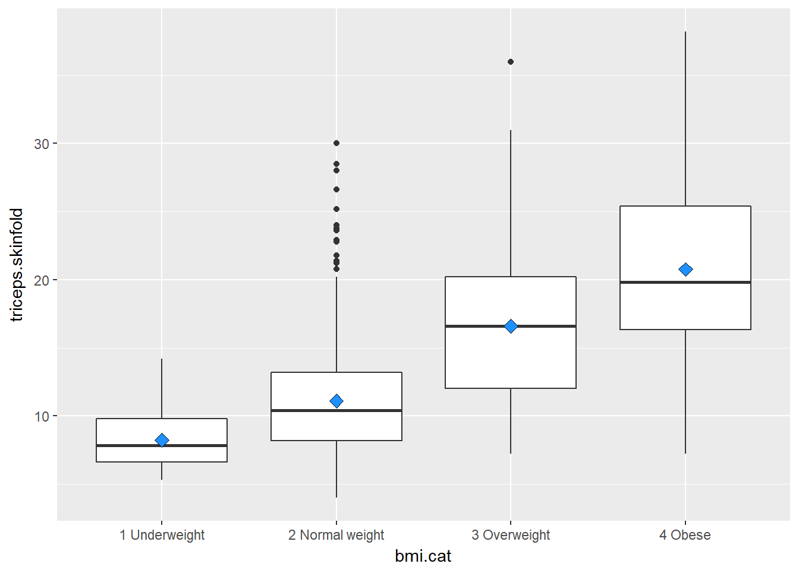
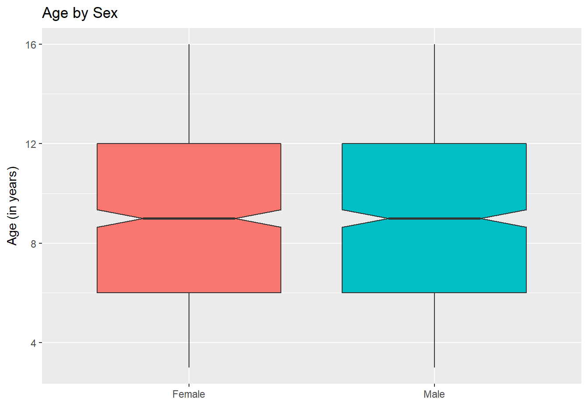
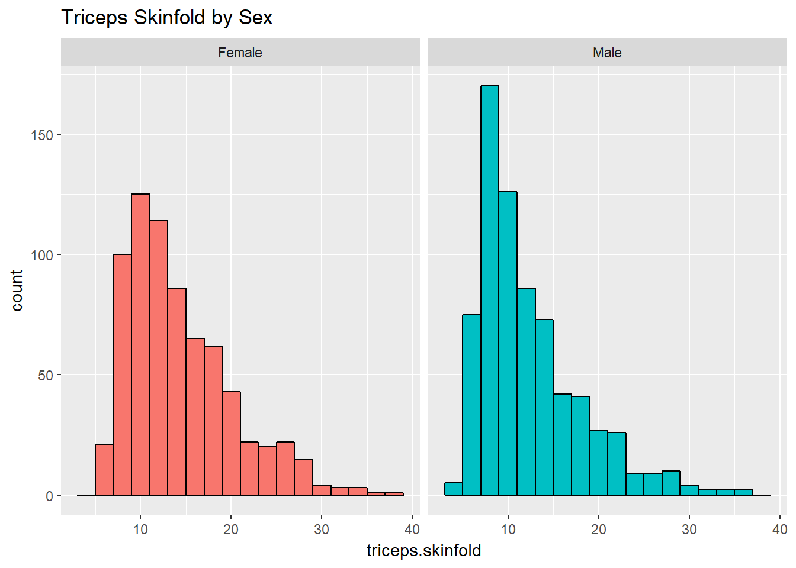
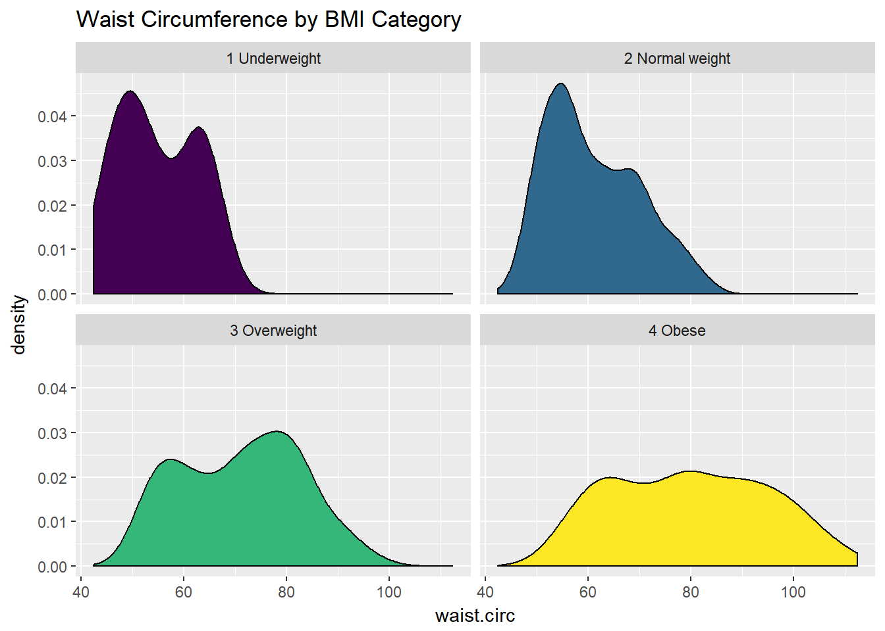
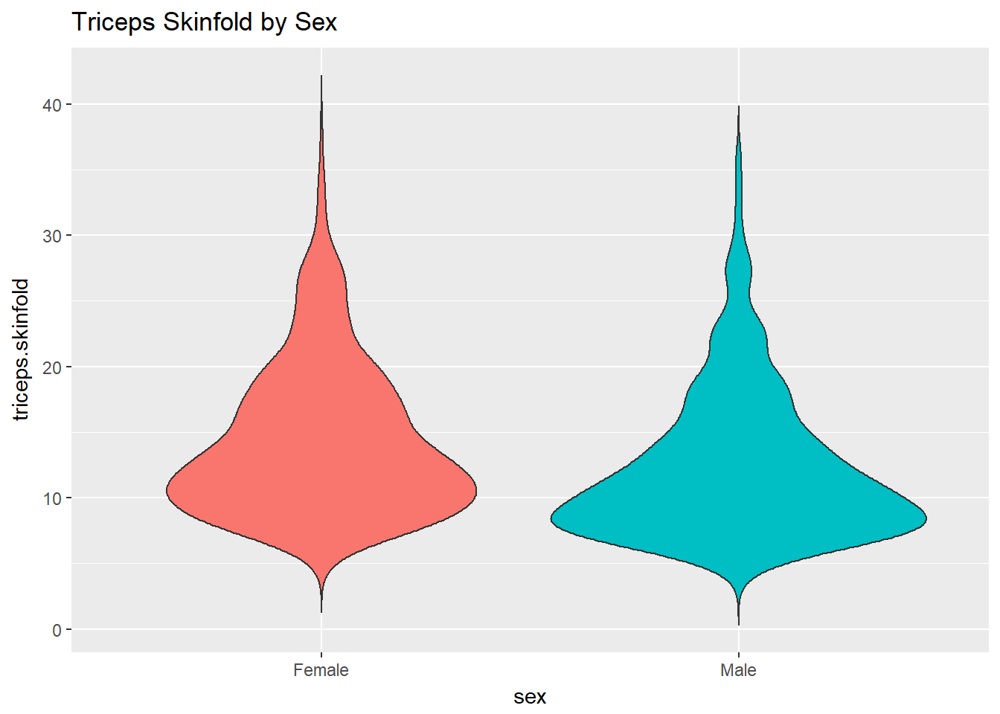
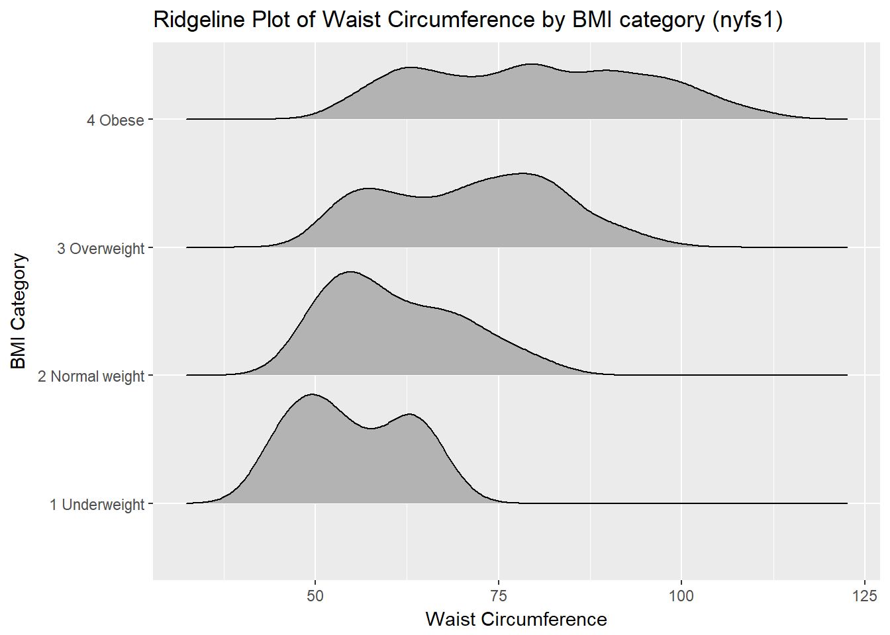
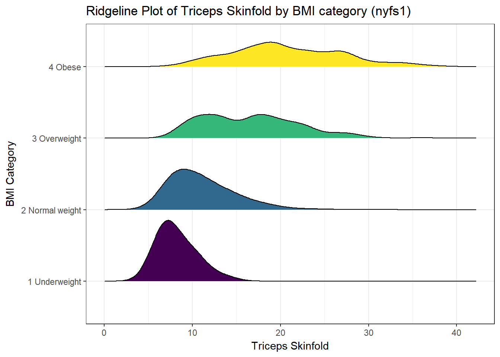

Chapter 10 Summarizing data within subgroups
10.1 Using dplyr and summarise to build a tibble of summary information
nyfs1 %>%
group_by(sex) %>%
select(bmi, waist.circ, sex) %>%
summarise_all(funs(median))# A tibble: 2 x 3
sex bmi waist.circ
<fctr> <dbl> <dbl>
1 Female 17.6 63.6
2 Male 17.7 62.5nyfs1 %>%
group_by(bmi.cat) %>%
summarise(mean = mean(waist.circ), sd = sd(waist.circ), median = median(waist.circ),
skew_1 = round((mean(waist.circ) - median(waist.circ)) / sd(waist.circ),3))# A tibble: 4 x 5
bmi.cat mean sd median skew_1
<fctr> <dbl> <dbl> <dbl> <dbl>
1 1 Underweight 54.9 7.63 53.9 0.136
2 2 Normal weight 61.0 9.10 59.2 0.193
3 3 Overweight 71.1 11.80 72.0 -0.075
4 4 Obese 79.9 15.01 79.9 -0.003While patients in the heavier groups generally had higher waist circumferences, this is not inevitably the case.
The data transformation with dplyr cheat sheet found under the Help menu in R Studio is a great resource. And, of course, for more details, visit Grolemund and Wickham (2017).
10.2 Using the by function to summarize groups numerically
We can summarize our data numerically in multiple ways, but to use the favstats or Hmisc::describe tools to each individual BMI subgroup separately, we might consider applying the by function.
by(nyfs1$waist.circ, nyfs1$bmi.cat, mosaic::favstats)nyfs1$bmi.cat: 1 Underweight
min Q1 median Q3 max mean sd n missing
42.5 49.2 53.9 62.4 68.5 54.9 7.63 42 0
--------------------------------------------------------
nyfs1$bmi.cat: 2 Normal weight
min Q1 median Q3 max mean sd n missing
44.1 53.8 59.2 68 85.5 61 9.1 926 0
--------------------------------------------------------
nyfs1$bmi.cat: 3 Overweight
min Q1 median Q3 max mean sd n missing
49.3 60.8 72 80.6 98.3 71.1 11.8 237 0
--------------------------------------------------------
nyfs1$bmi.cat: 4 Obese
min Q1 median Q3 max mean sd n missing
52.1 66.7 79.9 91.6 112 79.9 15 211 0As shown below, we could do this in pieces with dplyr, but the by approach can be faster for this sort of thing.
nyfs1 %>%
group_by(bmi.cat) %>%
summarise(min = min(waist.circ), Q1 = quantile(waist.circ, 0.25),
median = median(waist.circ), Q3 = quantile(waist.circ, 0.75),
max = max(waist.circ), mean = mean(waist.circ),
sd = sd(waist.circ), n = length(waist.circ),
missing = sum(is.na(waist.circ)))# A tibble: 4 x 10
bmi.cat min Q1 median Q3 max mean sd n missing
<fctr> <dbl> <dbl> <dbl> <dbl> <dbl> <dbl> <dbl> <int> <int>
1 1 Underweight 42.5 49.2 53.9 62.4 68.5 54.9 7.63 42 0
2 2 Normal weight 44.1 53.8 59.2 68.0 85.5 61.0 9.10 926 0
3 3 Overweight 49.3 60.8 72.0 80.6 98.3 71.1 11.80 237 0
4 4 Obese 52.1 66.7 79.9 91.6 112.4 79.9 15.01 211 010.3 Boxplots to Relate an Outcome to a Categorical Predictor
Boxplots are much more useful when comparing samples of data. For instance, consider this comparison boxplot describing the triceps skinfold results across the four levels of BMI category.
ggplot(nyfs1, aes(x=bmi.cat, y=triceps.skinfold)) +
geom_boxplot()
As always, the boxplot shows the five-number summary (minimum, 25th percentile, median, 75th percentile and maximum) in addition to highlighting candidate outliers.
10.3.1 Augmenting the Boxplot with the Sample Mean
Often, we want to augment such a plot, perhaps with the sample mean within each category, so as to highlight skew (in terms of whether the mean is meaningfully different from the median.)
ggplot(nyfs1, aes(x=bmi.cat, y=triceps.skinfold)) +
geom_boxplot() +
stat_summary(fun.y="mean", geom="point", shape=23, size=3, fill="dodgerblue")
10.3.2 Adding Notches to a Boxplot
Notches are used in boxplots to help visually assess whether the medians of the distributions across the various groups actually differ to a statistically detectable extent Think of them as confidence regions around the medians. If the notches do not overlap, as in this situation, this provides some evidence that the medians in the populations represented by these samples may be different.
ggplot(nyfs1, aes(x=bmi.cat, y=triceps.skinfold, fill = bmi.cat)) +
geom_boxplot(notch=TRUE) +
scale_fill_viridis(discrete=TRUE, option="plasma") +
labs(title = "Triceps Skinfold by BMI category",
x = "BMI Percentile category", y = "Triceps Skinfold (mm)")
There is no overlap between the notches for each of the four categories, so we might reasonably conclude that the true median triceps skinfold values across the four categories are statistically significantly different.
For an example where the notches overlap, consider the comparison of ages across sex.
ggplot(nyfs1, aes(x=sex, y=age.exam, fill=sex)) +
geom_boxplot(notch=TRUE) +
guides(fill = "none") + ## drops the legend
labs(title = "Age by Sex", x = "", y = "Age (in years)")
In this case, the overlap in the notches suggests that the median ages in the population of interest don’t necessarily differ by sex.
10.4 Using Multiple Histograms to Make Comparisons
We can make an array of histograms to describe multiple groups of data, using ggplot2 and the notion of faceting our plot.
ggplot(nyfs1, aes(x=triceps.skinfold, fill = sex)) +
geom_histogram(binwidth = 2, color = "black") +
facet_wrap(~ sex) +
guides(fill = "none") +
labs(title = "Triceps Skinfold by Sex")
10.5 Using Multiple Density Plots to Make Comparisons
Or, we can make a series of density plots to describe multiple groups of data.
ggplot(nyfs1, aes(x=waist.circ, fill = bmi.cat)) +
geom_density() +
facet_wrap(~ bmi.cat) +
scale_fill_viridis(discrete=T) +
guides(fill = "none") +
labs(title = "Waist Circumference by BMI Category")
Or, we can plot all of the densities on top of each other with semi-transparent fills.
ggplot(nyfs1, aes(x=waist.circ, fill=bmi.cat)) +
geom_density(alpha=0.3) +
scale_fill_viridis(discrete=T) +
labs(title = "Waist Circumference by BMI Category")
This really works better when we are comparing only two groups, like females to males.
ggplot(nyfs1, aes(x=waist.circ, fill=sex)) +
geom_density(alpha=0.5) +
labs(title = "Waist Circumference by Sex")
10.6 Building a Violin Plot
There are a number of other plots which compare distributions of data sets. An interesting one is called a violin plot. A violin plot is a kernel density estimate, mirrored to form a symmetrical shape.
ggplot(nyfs1, aes(x=sex, y=triceps.skinfold, fill = sex)) +
geom_violin(trim=FALSE) +
guides(fill = "none") +
labs(title = "Triceps Skinfold by Sex")
Traditionally, these plots are shown with overlaid boxplots and a white dot at the median, like this.
ggplot(nyfs1, aes(x=bmi.cat, y=waist.circ, fill = bmi.cat)) +
geom_violin(trim=FALSE) +
geom_boxplot(width=.1, outlier.colour=NA,
color = c(rep("white",2), rep("black",2))) +
stat_summary(fun.y=median, geom="point",
fill="white", shape=21, size=3) +
scale_fill_viridis(discrete=T) +
guides(fill = "none") +
labs(title = "Waist Circumference by BMI Category in nyfs1",
x = "BMI category", y = "Waist Circumference")
10.7 A Ridgeline Plot
Some people don’t like violin plots - for example, see https://simplystatistics.org/2017/07/13/the-joy-of-no-more-violin-plots/. A very new and attractive alternative plot is available. This shows the distribution of several groups simultaneously, especially when you have lots of subgroup categories, and is called a ridgeline plot8.
nyfs1 %>%
ggplot(aes(x = waist.circ, y = bmi.cat, height = ..density..)) +
ggridges::geom_density_ridges(scale = 0.85) +
labs(title = "Ridgeline Plot of Waist Circumference by BMI category (nyfs1)",
x = "Waist Circumference", y = "BMI Category")Picking joint bandwidth of 3.38
And here’s a ridgeline plot for the triceps skinfold. We’ll start by sorting the subgroups by the median value of our outcome (triceps skinfold) in this case, though it turns out not to matter. We’ll also add some color.
nyfs1 %>%
mutate(bmi.cat = reorder(bmi.cat, triceps.skinfold, median)) %>%
ggplot(aes(x = triceps.skinfold, y = bmi.cat, fill = bmi.cat, height = ..density..)) +
ggridges::geom_density_ridges(scale = 0.85) +
scale_fill_viridis(discrete = TRUE) +
guides(fill = FALSE) +
labs(title = "Ridgeline Plot of Triceps Skinfold by BMI category (nyfs1)",
x = "Triceps Skinfold", y = "BMI Category") +
theme_bw()Picking joint bandwidth of 1.33
For one last example, we’ll look at age by BMI category, so that sorting the BMI subgroups by the median matters, and we’ll try an alternate color scheme, and a theme specially designed for the ridgeline plot.
nyfs1 %>%
mutate(bmi.cat = reorder(bmi.cat, age.exam, median)) %>%
ggplot(aes(x = triceps.skinfold, y = bmi.cat, fill = bmi.cat, height = ..density..)) +
ggridges::geom_density_ridges(scale = 0.85) +
scale_fill_brewer(palette = 2) +
guides(fill = FALSE) +
labs(title = "Ridgeline Plot of Age at Exam by BMI category (nyfs1)",
x = "Age at Exam", y = "BMI Category") +
ggridges::theme_ridges()Picking joint bandwidth of 1.33
References
Grolemund, Garrett, and Hadley Wickham. 2017. R for Data Science. O’Reilly. http://r4ds.had.co.nz/.
These were originally called joy plots, and the tools were contained in the
ggjoypackage but that name and package has been deprecated in favor ofggridges.↩